사용 API
POST /subscriptions/{subscriptionId}/resume해지 예약 또는 결제 실패 상태의 구독을 재개합니다.
GET /subscriptions/me현재 회원의 상품별 구독 목록, 이용 기간, 다음 결제일, 공통 기본 결제수단 표시 정보를 조회합니다.
POST /internal/subscription-billing/run다음 결제일이 도래한 구독을 찾아 정기 자동결제를 실행합니다.
해지 예약 철회
cancel_scheduled 상태의 구독을 기간 종료 전에 다시 active로 복구하고 정기 과금 배치가 다음 결제일을 조회할 수 있게 합니다.

D2 원본 보기
diagram: {
shape: sequence_diagram
label: "해지 예약 철회"
client: "웹 클라이언트"
client.style.fill: "#e8f3ff"
client.style.stroke: "#2457a6"
server: "우리 서버"
server.style.fill: "#eaf8f3"
server.style.stroke: "#1c7c66"
scheduler: "스케줄러"
scheduler.style.fill: "#fff8e6"
scheduler.style.stroke: "#9a5b00"
client -> server: |md
구독 재개 요청
**POST /subscriptions/{subscriptionId}/resume**
resumeReason, Idempotency-Key, session
| {
style.stroke: "#1c7c66"
style.font-color: "#334155"
style.font-size: 18
style.italic: false
}
server.note_2: "회원과 구독 소유권 검증\nsession.userId == subscription.userId\n현재 회원 소유 구독만 재개 가능"
server.note_3: "재개 가능 상태 확인\nstatus == cancel_scheduled\n이미 canceled이면 신규 구독 또는 별도 복구 정책으로 안내"
server.note_4: "기간 종료 전 여부 확인\nnow < currentPeriodEnd\n기간 종료 후에는 해지 예약 철회 불가"
server.note_5: "구독 상태와 청구 일정 복구\nstatus=active, cancelAt=null\nnextBillingDate 복구"
server -> client: |md
재개 결과 반환
status=active, resumeAvailable=false
프론트는 구독 상세 화면의 해지 예정 배지를 제거
| {
style.stroke: "#2457a6"
style.font-color: "#334155"
style.font-size: 18
style.italic: false
}
client -> server: |md
현재 구독 상태 조회
**GET /subscriptions/me**
복구된 nextBillingDate와 결제수단 표시
| {
style.stroke: "#1c7c66"
style.font-color: "#334155"
style.font-size: 18
style.italic: false
}
scheduler -> server: |md
정기 과금 배치 실행
**POST /internal/subscription-billing/run**
active이고 nextBillingDate가 도래하면 다시 결제 후보
| {
style.stroke: "#1c7c66"
style.font-color: "#334155"
style.font-size: 18
style.italic: false
}
}
상태 요약
| 시점 | 구독 상태 | 결제 상태 | 설명 |
|---|---|---|---|
| 재개 요청 전 | cancel_scheduled | paid | 회원은 남은 기간을 이용 중이지만 다음 결제일은 제거되어 있습니다. |
| 재개 성공 직후 | active | paid | 해지 예약이 철회되고 다음 결제일이 복구됩니다. |
| 다음 과금 배치 시점 | active | pending | nextBillingDate가 도래하면 정기 과금 배치가 구독을 다시 결제 후보로 조회합니다. |